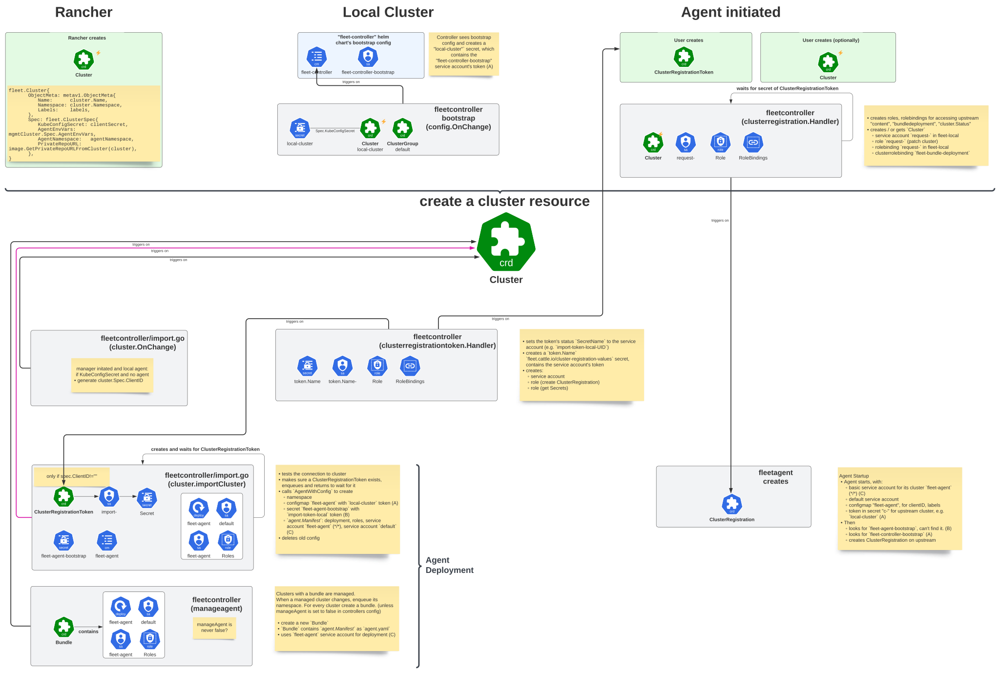
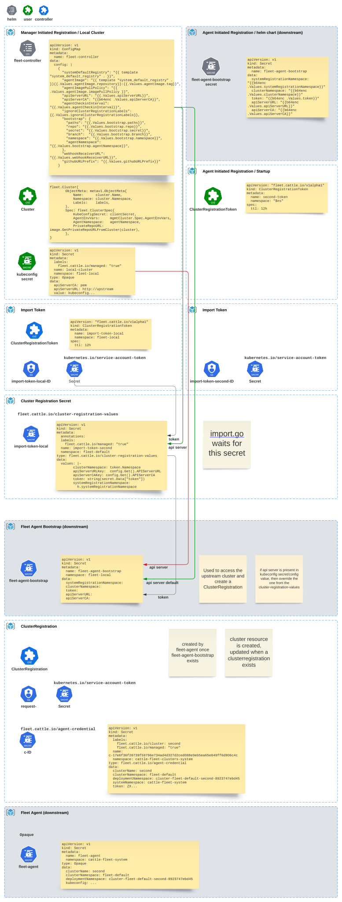

Aspects internes de l’enregistrement du cluster
Comment fonctionne l’enregistrement du cluster ?
Ce texte décrit l’enregistrement du cluster avec plus de détails techniques. Le texte ignore l’enregistrement initié par l’agent, car il n’est pas couramment utilisé. Enregistrement initié par l’agent est "`ClusterRegistrationToken` en premier", ce qui signifie que la pré-création d’un cluster est optionnelle.
Voir Enregistrer les clusters en aval pour apprendre comment enregistrer des clusters.
Cluster d’abord
fleet-controller démarre et peut "démarrer" la ressource de grappe locale. Dans Rancher, la création de la ressource de grappe locale est gérée par le contrôleur fleetcluster à la place, mais sinon le processus est identique.
Le processus est identique pour la grappe locale ou tout cluster en aval. Il commence par créer une ressource de cluster, qui fait référence à un secret kubeconfig.
Création du secret de démarrage pour le cluster en aval
À cette étape, un ClusterRegistationToken et un compte de service "import" sont créés sur la base d’une ressource Cluster.
Le contrôleur SUSE® Rancher Prime Continuous Delivery crée un ClusterRegistrationToken et attend qu’il soit complet. Le ClusterRegistationToken déclenche la création du compte de service "import", qui peut créer ClusterRegistrations et lire tout secret dans l’espace de noms d’enregistrement du système (par exemple "cattle-fleet-clusters-system"). Le contrôleur import.go se mettra en file d’attente jusqu’à ce que le compte de service "import" existe, car ce compte est nécessaire pour créer le secret fleet-agent-bootstrap.
Création du déploiement de l’agent SUSE® Rancher Prime Continuous Delivery
Le contrôleur SUSE® Rancher Prime Continuous Delivery va maintenant créer le déploiement de l’agent SUSE® Rancher Prime Continuous Delivery et le secret de démarrage sur le cluster en aval.
Le secret de démarrage contient l’URL du serveur API du cluster en amont et est utilisé pour construire un kubeconfig pour accéder au cluster en amont. Les deux valeurs sont extraites du configmap de configuration du contrôleur SUSE® Rancher Prime Continuous Delivery. Ce configmap fait partie du chart helm.
SUSE® Rancher Prime Continuous Delivery Agent commence l’enregistrement et passe au compte "request".
L’agent utilise le compte "import" pour passer au compte "request".
Immédiatement, l’agent SUSE® Rancher Prime Continuous Delivery vérifie la présence d’un secret fleet-agent-bootstrap. Si le secret de démarrage, qui contient le kubeconfig "import", est présent, l’agent commence à s’enregistrer.
Ensuite, l’agent crée la ressource finale ClusterRegistration dans fleet-default sur le cluster de gestion, avec un numéro aléatoire. Le numéro aléatoire sera utilisé pour le nom du secret d’enregistrement.
Le contrôleur SUSE® Rancher Prime Continuous Delivery déclenche et essaie d’accorder la demande ClusterRegistration pour créer le compte de service de l’agent et créer le secret d’enregistrement 'c-*' avec le nouveau kubeconfig du client. Le nom du secret d’enregistrement est hash("clientID-clientRandom").
Le nouveau kubeconfig utilise le compte "request". Le compte "request" peut accéder à l’état du cluster, BundleDeployments et Contents.

L’agent SUSE® Rancher Prime Continuous Delivery est enregistré, surveille BundleDeployments.
À ce stade, l’agent est entièrement enregistré et va persister le compte "request" dans un secret fleet-agent.
L’URL du serveur API et le CA sont copiés à partir du secret de bootstrap, qui a hérité de ces valeurs des valeurs du chart Helm du contrôleur SUSE® Rancher Prime Continuous Delivery.
Le secret de bootstrap est supprimé. Lorsque l’agent redémarre, il ne se réenregistrera pas, car le secret de bootstrap est manquant.
L’agent commence à surveiller son espace de noms de cluster pour BundleDeployments. À ce stade, l’agent est prêt à déployer des charges de travail.
Notes
-
L’enregistrement commence avec le compte "import" et passe au compte "request".
-
L’espace de noms fleet-default contient tous les enregistrements de cluster, le compte "import" utilise un espace de noms séparé.
-
Une fois l’agent enregistré,
fleet-controllerse déclenchera lors d’un changement de cluster ou d’espace de noms. Le contrôleurmanageagentcréera ensuite un bundle pour adopter le déploiement existant de l’agent. L’agent se mettra à jour vers le bundle et, comme la variable d’environnement "generation" change, il redémarrera. -
Si aucun secret de bootstrap n’existe, l’agent ne se réenregistrera pas.
Diagramme
Flux d’enregistrement
le ClusterRegistrationToken) --> A2{Fleet Controller Creates Secret
for a temporary 'import' ServiceAccount} fin sous-graphe "Flux 2 :" Manager-Initié (pour un cluster existant)" direction TB B1(L'administrateur crée le secret Kubeconfig
pour un cluster existant) --> B2(L'administrateur crée la ressource de cluster
référencant le secret Kubeconfig.
Peut définir un clientID ici) B2 --> B3{Fleet Controller uses admin-provided
kubeconfig to deploy agent} fin fin sous-graphe "Aval (Cluster Géré)" direction LR sous-graphe "Installation de l'Agent (Flux 1)" direction TB A3(L'administrateur installe l'agent Fleet via Helm
en utilisant le secret de token 'import'.
Peut fournir un clientID) fin sous-graphe "Agent Déployé (Flux 2)" direction TB B4(L'agent et le secret de bootstrap sont déployés.
Le bootstrap contient un kubeconfig 'import'.) fin fin sous-graphe "Étapes d'Enregistrement Communes (Poignée d'Identité)" direction TB C1(Le pod de l'agent démarre, utilisant son 'agent' SA local.
Trouve et utilise le kubeconfig 'import'
du secret de bootstrap pour communiquer avec l'Amont.) C1 --> C2(En utilisant son identité 'import', l'agent crée
une ressource d'enregistrement de cluster en amont) C2 --> C3{Upstream Controller creates a permanent
'request' ServiceAccount & a new,
long-term kubeconfig/secret for it.} C3 --> C4(L'agent reçoit et persiste les
identifiants SA 'request'.
Le secret de bootstrap temporaire est supprimé.) C4 --> C5{Upstream Controller creates a dedicated
Cluster Namespace for this agent.} C5 --> C6(✅ Agent entièrement enregistré.
Utilise son identité 'request' pour surveiller
les charges de travail dans son espace de noms.) end %% Style style A0 fill:#e0f2fe,stroke:#0ea5e9,stroke-width:2px style A1 fill:#e0f2fe,stroke:#0ea5e9,stroke-width:2px style B1 fill:#e0f2fe,stroke:#0ea5e9,stroke-width:2px style A3 fill:#d1fae5,stroke:#10b981,stroke-width:2px style B2 fill:#e0f2fe,stroke:#0ea5e9,stroke-width:2px style A2 fill:#fef3c7,stroke:#f59e0b,stroke-width:2px style B3 fill:#fef3c7,stroke:#f59e0b,stroke-width:2px style B4 fill:#fef3c7,stroke:#f59e0b,stroke-width:2px style C1 fill:#f3e8ff,stroke:#8b5cf6,stroke-width:2px style C2 fill:#f3e8ff,stroke:#8b5cf6,stroke-width:2px style C3 fill:#f3e8ff,stroke:#8b5cf6,stroke-width:2px style C4 fill:#f3e8ff,stroke:#8b5cf6,stroke-width:2px style C5 fill:#f3e8ff,stroke:#8b5cf6,stroke-width:2px style C6 fill:#dcfce7,stroke:#22c55e,stroke-width:2px,font-weight:bold %% Connexions A2 --> A3 B3 --> B4 A3 --> C1 B4 --> C1
Processus d’enregistrement et contrôleurs
Analyse détaillée du processus d’enregistrement pour les clusters. Cela montre l’interaction des contrôleurs, des ressources et des comptes de service lors de l’enregistrement d’un nouveau cluster en aval ou de la grappe locale.
Il est important de noter qu’il existe plusieurs façons de commencer cela :
-
Créer une configuration de bootstrap. SUSE® Rancher Prime Continuous Delivery le fait pour l’agent local.
-
Créer une ressource
Clusteravec un kubeconfig. Rancher fait cela pour les clusters en aval. Voir enregistrement initié par le gestionnaire. -
Créez une ressource
ClusterRegistrationToken, et éventuellement créez une ressourceClusterpour un cluster pré-défini (clientID). Voir enregistrement initié par l’agent.

Secrets lors du déploiement de l’agent
Ce diagramme montre les ressources créées lors de l’enregistrement et se concentre sur la configuration du serveur API k8s.
Le contrôleur import.go se déclenche lors des événements de création/mise à jour du cluster et déploie l’agent.
Cette image montre comment l’URL du serveur API et le CA se propagent à travers les secrets lors de l’enregistrement :
Les flèches dans le diagramme montrent comment les valeurs du serveur API sont copiées des valeurs Helm vers le secret d’enregistrement du cluster sur le cluster en amont et enfin en aval vers le secret de démarrage de l’agent.
Il y a un cas particulier, si l’agent est pour le cluster local/"bootstrap", les valeurs du serveur existent également dans le secret kubeconfig, référencé par la ressource Cluster. Dans ce cas, le secret kubeconfig contient l’URL du serveur en amont et le CA, à côté du kubeconfig en aval. Si les paramètres sont présents dans le secret kubeconfig, ils remplacent les valeurs configurées.

SUSE® Rancher Prime Continuous Delivery Enregistrement du cluster dans Rancher
Rancher installe le chart helm de fleet. L’URL du serveur API et le CA sont dérivés des paramètres de Rancher.
SUSE® Rancher Prime Continuous Delivery transmettra ces valeurs à un agent SUSE® Rancher Prime Continuous Delivery, afin qu’il puisse se connecter au contrôleur SUSE® Rancher Prime Continuous Delivery.
Importer le cluster dans Rancher
Lorsque l’utilisateur exécute curl | kubectl apply, le manifeste appliqué inclut le déploiement de l’agent Rancher.
Le déploiement contient un secret cattle-credentials- qui contient l’URL de l’API et un token.
L’agent Rancher démarre et rapporte le kubeconfig en aval à l’amont.
Rancher crée ensuite la ressource Cluster de Fleet, qui fait référence à un secret kubeconfig secret.
👉SUSE® Rancher Prime Continuous Delivery utilisera ce kubeconfig pour déployer l’agent sur le cluster en aval.